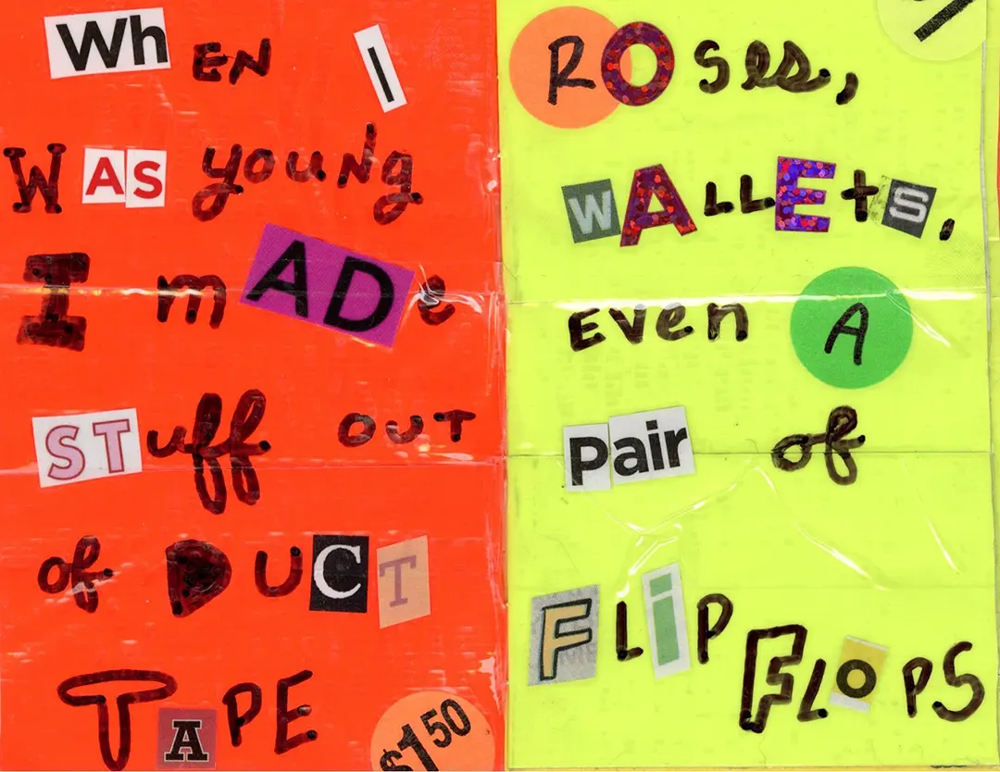

Duct Tape

When I was young I made stuff out of duct tape
Roses, wallets, even a pair of flip flops
I made my dad take me to home depot so I could pick out fun colors
There's something poetic about the union of art & utility
Something sinister about fashioning flowers from
Plastic & rubber glue